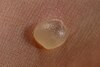

blister

Definition: A blister is a small pocket of body fluid (lymph, serum, plasma, blood, or pus) within the upper layers of the skin, usually caused by forceful rubbing (friction), burning, freezing, chemical exposure or infection. Most blisters are filled with a clear fluid, either serum or plasma. However, blisters can be filled with blood (known as "blood blisters") or with pus (for instance, if they become infected).
Source: Wikipedia
Wikipedia Page
Wikidata Page